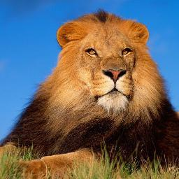
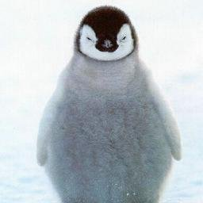
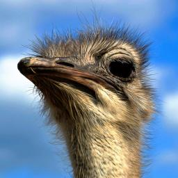
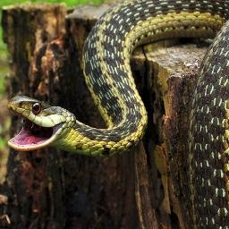

Лев
Лев (лат. Panthera leo) — вид хищных млекопитающих, один из четырёх представителей рода пантер (Panthera), относящегося к подсемейству больших кошек (Pantherinae) в составе семейства кошачьих (Felidae). Наряду с тигром — самая крупная из ныне живущих кошек, масса некоторых самцов может достигать 250 кг[2]. Трудно сказать достоверно, массивнее ли крупнейшие подвиды льва, чем крупнейшие подвиды тигров, или нет. Связано это с тем, что исторические очень крупные веса амурских тигров в большинстве своём признаны недостаточно достоверными[3]. Достаточными данными о размерах и массе представителей крупнейших подвидов льва (например, барбарийском) наука не располагает. Что касается живущих в неволе животных, они часто являют собой смешение разных подвидов. Существует мнение, что львы в неволе несколько превышают тигров в размерах и массе[4], также, как и обратное.
Пингвин
Пингви́новые, или пингви́ны (лат. Spheniscidae) — семейство нелетающих морских птиц, единственное современное в отряде пингвинообра́зных (Sphenisciformes)[1]. В семействе 18 современных видов. Все представители этого семейства хорошо плавают и ныряют. Форма тела пингвинов обтекаемая, что идеально для передвижения в воде. Мускулатура и устройство костей позволяют им под водой работать крыльями почти как винтами. В отличие от других нелетающих птиц, пингвины имеют грудину с чётко выраженным килем, к которому крепится мощная мускулатура. Плавание под водой отличается от полёта в воздухе тем, что на подъём крыла затрачивается та же энергия, что и на опускание, поскольку сопротивление воды больше, чем сопротивление воздуха, поэтому лопатки пингвинов имеют по сравнению с другими птицами бо́льшую поверхность, на которой крепится мускулатура, отвечающая за подъём крыла. Плечевая кость и кость предплечья соединены в локте прямо и неподвижно, что увеличивает стабильность крыла. Грудная мускулатура развита и составляет иногда до 30% массы тела, что в несколько раз превышает аналогичное соотношение у самых мощных летающих птиц. Бедренные кости очень короткие, коленный сустав неподвижен, а ноги заметно смещены назад, что является причиной необычно прямой походки. Большие ступни с плавательной перепонкой сравнительно коротки — находясь на суше, животные зачастую отдыхают, стоя на пятках, при этом жёсткое хвостовое оперение служит им дополнительной опорой. Хвост пингвинов сильно укорочен, поскольку рулевую функцию, которую он обычно имеет у других водоплавающих птиц, у пингвинов выполняют в первую очередь ноги. Второе явное отличие пингвинов от других птиц — плотность костей. У всех птиц кости трубчатые, что делает их скелет легче и позволяет летать или быстро бегать, а у пингвинов они похожи на кости млекопитающих (дельфинов и тюленей) и не содержат внутренних полостей.
Cтраус
Африка́нский стра́ус (лат. Struthio camelus) — бескилевая нелетающая птица, единственный современный представитель семейства страусовых (Struthionidae). Его научное название в переводе с греческого означает «воробей-верблюд». Африканский страус — самая крупная из современных птиц: высотой до 270 см и массой до 156 кг. Страус имеет плотное телосложение, длинную шею и небольшую уплощённую голову. Клюв прямой, плоский, с роговым «когтем» на надклювье, довольно мягкий. Глаза большие, с густыми ресницами на верхнем веке. Страусы — нелетающие птицы. Для них характерно полное отсутствие киля и слаборазвитая грудная мускулатура; скелет не пневматичен, за исключением бедренных костей. Крылья у страусов недоразвитые; два пальца на них заканчиваются когтями, или шпорами. Задние конечности длинные и сильные, всего с двумя пальцами. Один из пальцев заканчивается подобием рогового копыта — на него птица опирается при беге.[источник не указан 1956 дней] Оперение у страуса рыхлое и курчавое. Перья растут по всему телу более-менее равномерно, птерилии отсутствуют. Строение пера примитивное: бородки почти не сцеплены друг с другом, поэтому плотных пластинок-опахал не образуется. Не оперены голова, шея и бёдра. На груди также имеется голый участок кожи, грудная мозоль, на которую страус опирается, когда ложится. Цвет оперения у взрослого самца чёрный; перья хвоста и крыльев белые. Самка страуса мельче самца и окрашена однообразно — в серовато-бурые тона; перья крыльев и хвоста — грязно-белые.
Змея
 Зме́и (лат. Serpentes) — подотряд класса пресмыкающихся отряда чешуйчатые. Змеи обитают на всех континентах, кроме Антарктиды и нескольких крупных островов, таких как Ирландия и Новая Зеландия, а также множества мелких островов Атлантического океана и центральной части Тихого океана. Некоторые змеи ядовиты, но неядовитые представлены бóльшим количеством видов. Ядовитые пользуются ядом в первую очередь для охоты (чтобы убить жертву), а не для самозащиты. Яд некоторых видов достаточно силён, чтобы убить человека. Неядовитые змеи либо заглатывают добычу живьём (ужи), либо предварительно убивают (удушают) её (полозы, удавы). Самые крупные известные змеи из ныне живущих на Земле — сетчатый питон и водяной удав анаконда. Длина самых мелких змей из ныне живущих — Leptotyphlops carlae — не превышает 10 сантиметров. Размер большинства змей не превышает одного метра. Тело удлинённое, без конечностей. Длина тела от 10 см до ≥7 м. От безногих ящериц змеи отличаются подвижным соединением левой и правой частей челюстей (что даёт возможность заглатывать добычу целиком), отсутствием подвижных век, барабанной перепонки и плечевого пояса.
Вернуться в начало